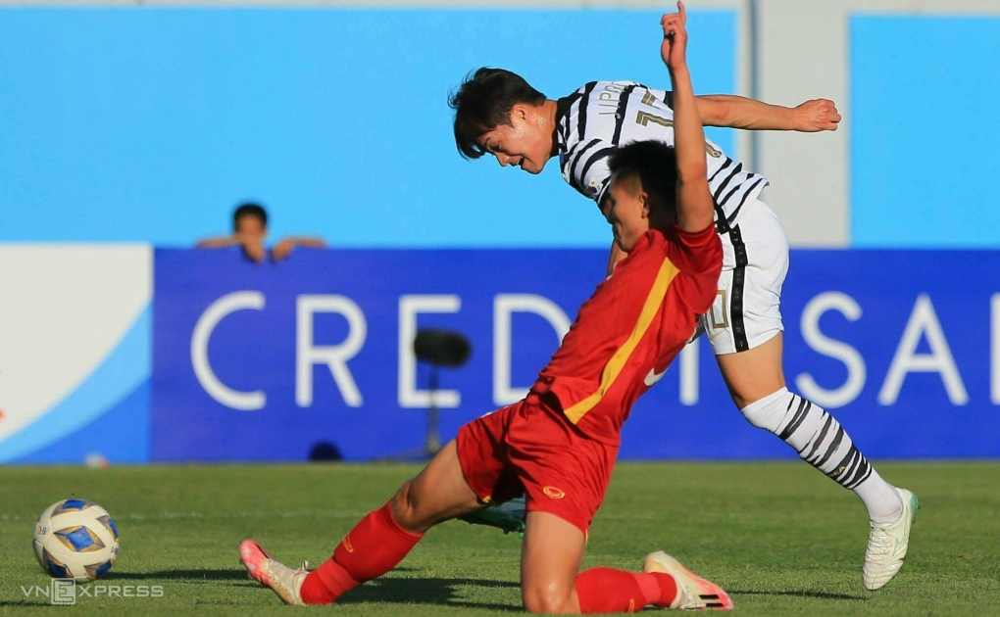

"Tôi không ngủ nổi sau trận đấu Việt Nam. Đây thực sự đó là những giây phút khó chịu bậc nhất trong sự nghiệp cầu thủ của tôi", Park nói với truyền thông Hàn Quốc hôm qua 6/6, một ngày sau trận đấu Việt Nam ở lượt hai bảng C.
Hàn Quốc là đương kim vô địch, toàn thắng Việt Nam trong bốn lần đối đầu chính thức trước đó ở cấp độ U23. Trước trận, HLV Hwang Sun-hong tuyên bố sẽ thắng Việt Nam, như từng làm trước Malaysia ngày ra quân, để sớm giành vé vào tứ kết.
Park Jeong-in bị hậu vệ Việt Nam cản phá trong trận hòa 1-1 trên sân Lokomotiv, Tashkent, Uzbekistan ngày 5/6. Ảnh: Lâm Thỏa
Với thế trận chủ động, cầm bóng trên 70% và tung ra gần 20 cú dứt điểm, đến phút 64 Hàn Quốc mở tỷ số nhờ công tiền đạo Cho Young-wook. Nhưng phút 78 họ lâm vào thế mất người, vì Lee Jin-yong nhận thẻ vàng thứ hai sau pha phạm lỗi với Nguyễn Văn Tùng. Chỉ còn 10 cầu thủ, các học trò của HLV Hwang lúng túng, và để Việt Nam chớp thời cơ gỡ hoà 1-1 từ cú sút một chạm của Vũ Tiến Long.
"Trong trận đấu Việt Nam, tôi không đáp ứng được kỳ vọng ghi bàn. Vì vậy, tôi hiểu những chỉ trích nhắm vào mình. Là tiền đạo, nhiệm vụ của tôi là phải ghi bàn, nhưng đôi khi chúng ta gặp khó khăn trong việc thực hiện vai trò của mình. Tôi thực sự xin lỗi", Park nói thêm.
Park sinh năm 2000, đang chơi cho Busan I Park FC. Anh được HLV Hwang Sun-hong coi là tiền đạo chủ lực, nhưng "tịt ngòi" qua cả hai trận đã đấu ở giải U23 châu Á. Trong trận Việt Nam, Park hai lần bỏ lỡ cơ hội ngon ăn. Đầu tiên, anh phá bẫy việt vị nhưng xử lý chậm, để Thanh Bình băng về cắt bóng. Tiếp đó, "số 10" đánh đầu đi chệch đích từ vị trí thuận lợi.
"Tôi liên tục có các cơ hội, nhưng bỏ lỡ. Vì vậy, tôi bắt đầu cảm thấy lo nghĩ. Nếu tôi không thể ghi bàn, tôi sẽ gặp rắc rối. Ở trận gặp Việt Nam, tôi đã có phần vội vàng, mất bình tĩnh. Nếu là một tiền đạo, bạn không nên như vậy", Park nói rồi tiếp tục xin lỗi người hâm mộ Hàn Quốc.
Hòa Việt Nam, Hàn Quốc có bốn điểm, đứng thứ hai bảng C. Ở loạt trận cuối ngày 8/6, đội bóng xứ kim chi sẽ gặp đối thủ bằng điểm nhưng xếp trên vì nhận ít thẻ hơn là Thái Lan. Park Jeong-in hứa sẽ chơi hết mình, ghi bàn giúp Hàn Quốc chiến thắng và vào tứ kết.
Lâm Thỏa (từ Tashkent)